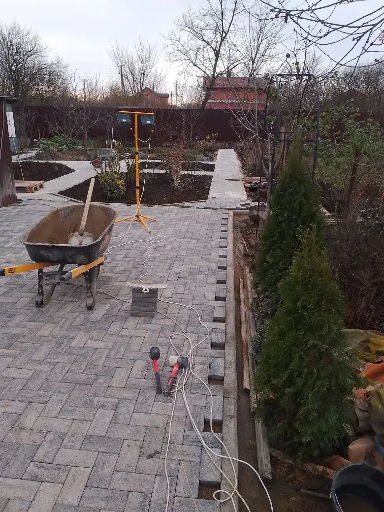
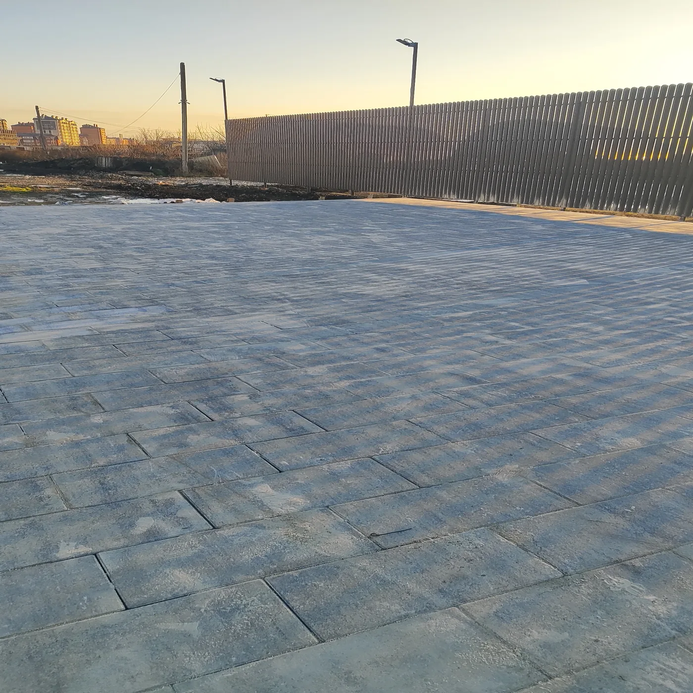

Направления работы
Услуги
Подготовка основания, укладка плитки, бетонирование и обслуживание покрытий. Состав работ и условия обсудим для вашего объекта.

01 / 04
Укладка тротуарной плитки
Мощение дворов, дорожек и площадок. Подбираем решение с учётом участка и предполагаемой нагрузки, готовим основание и укладываем покрытие.
Посмотреть проекты
02 / 04
Подготовка основания
Готовим основание перед укладкой покрытия. Объём работ зависит от особенностей участка и предполагаемой нагрузки.
Обсудить задачу
03 / 04
Бетонирование дворов
Устройство бетонного покрытия во дворе и на площадках. Решение и объём работ зависят от участка и назначения покрытия.
Обсудить задачу
04 / 04
Комплексное межсезонное обслуживание
Работы по уходу за покрытием между сезонами. Конкретный состав и периодичность согласуем для вашего объекта.
Обсудить объект